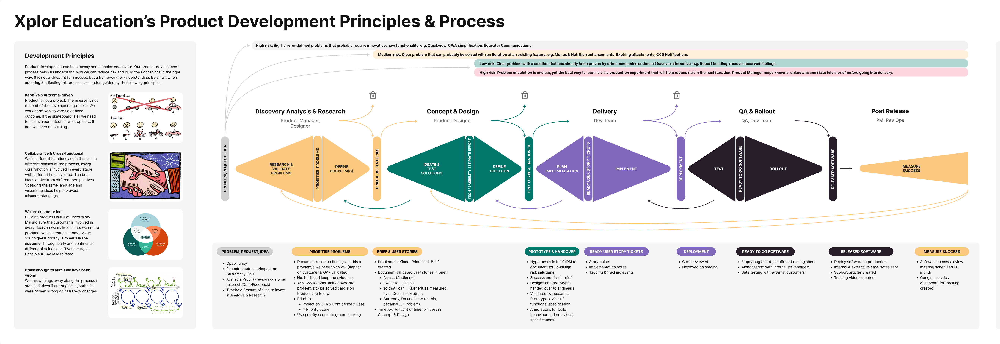

Playbook
Product Development Lifecycle
How the Xplor Education product team takes an idea from raw signal to released, measured software — the principles that guide it, the stages it moves through, and the gates each stage must clear. The map runs left to right; risk is highest at the start and falls as evidence accumulates, so the cheapest place to be wrong is early.
Want to see how today's AI skills sit inside this process? See Skills & the Lifecycle.
Development principles
Four principles hold across every stage. They describe a way of working, not a set of deliverables.
Iterative & outcome-driven
Product is not a project, and the release is not the end. We work iteratively toward a defined outcome. If the "skateboard" already achieves the outcome, we stop there; if not, we keep building.
Collaborative & cross-functional
Different functions lead in different phases, but every core function is involved at every stage — with different time invested. The best ideas come from different perspectives; a shared language and visualised ideas avoid misunderstanding.
We are customer-led
Building products is full of uncertainty. Involving the customer in every decision ensures we create real customer value. "Our highest priority is to satisfy the customer through early and continuous delivery of valuable software." — Agile Manifesto, Principle #1.
Brave enough to admit we've been wrong
We throw things away along the way and stop initiatives when the original hypotheses are disproven or the strategy changes. Killing the wrong bet early is a success, not a failure.
The lifecycle map
The original visualisation of the process. It reads left to right through five stages, with a decision gate (diamond) between each. The colour band beneath the flow tracks risk falling from high to low as the work moves right.

Stages & gates
Each stage has a small number of steps and ends at a gate — an explicit checklist that must be satisfied before the work moves on. The gates are where we decide to continue, iterate, or stop.
1 · Discovery / Analysis & Research
- Explore problems
- Prioritise problems
- Define the problem
- Define how we'll measure success
Entry gate — Problem, Request, Idea. An opportunity; the expected outcome / impact on the customer or OKR; available proof (previous customer research, data, feedback); and a timebox for how long to invest in Analysis & Research.
Exit gate — Prioritise Problems. Research findings documented. Is there a problem worth solving (impact on customer & OKR validated)? If no, kill it and keep the indicator. If yes, break the opportunity into problems (cards on the product Jira board) and prioritise them with Impact × Confidence × Ease → priority score, then groom the backlog by score.
2 · Concept & Design
- Ideate solutions
- Estimate value & effort
- Define the solution
Entry gate — Brief & User Stories. Problem defined, prioritised, and a brief created. User stories validated in the brief: "As a … (audience), I want to … (goal), so that I can … (benefit) by … (success metric). Currently I'm unable to do this because … (problem)." Plus a timebox for how long to invest in Concept & Design.
Exit gate — Prototype & Handover. Hypotheses documented in the brief (PM, for low- and high-risk solutions); success metrics in the brief; designs and prototypes handed to engineers; validated by research; prototype + visual / functional specification; annotations for build behaviour and non-visual specifications.
3 · Delivery
- Plan implementation
- Implement
Exit gate — Deployment. Story points assigned; implementation notes captured; tagging & tracking events in place.
4 · QA & Rollout
- Test
- Rollout
Mid gate — Ready-to-Go Software. Code reviewed; deployed on staging.
Exit gate — Released Software. Empty bug board / confirmed testing sheet; alpha testing with internal stakeholders; beta testing with external customers. On release: deployed to production; internal & external release notes sent; support articles created; training videos created.
5 · Post Release
- Measure success
Gate — Measure Success. A success-measure review meeting scheduled for ~one month after release, and an analytics dashboard created to track the success metrics defined back in Discovery. What we learn feeds the next iteration — closing the loop back to the start.